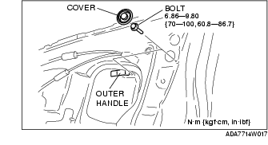

Front outer handle removal/installation
1. Fully roll up the front door glass.
2. Remove the rod protector. (if equipped)
3. Detach the front door latch and key cylinder rod.
4. Remove the cover.

5. Remove the bolt.
6. With the rear side of the front outer handle fixed and the outer handle lever pulled out (1), remove the rear side of the outer handle from the front door.

7. Pull out the front side of the front outer handle from the front door.
8. Install in the reverse order of removal.